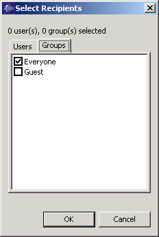
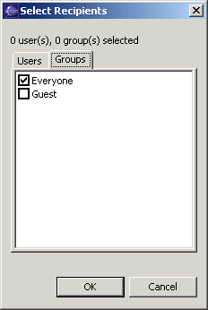

Collaboration Message Editor
This editor is for creating a message and its attachments, and to send the message.
To Button
This button opens a dialog for selecting the users and groups to which to send the message. These are displayed in the field next to the button.
 

Attach Button
This button opens a dialog for selecting the types of attachments the message will have. By default, a message has a text attachment containing the text of the message.

The attachments are shown in the message content section (see below). Workbench settings may be sent as an attachment. The setting interface is the same as presented in the Export Preferences wizard.
Any scheduled task created in the Scheduler view may also be sent as an attachment.
Send Button
This button sends the message to the specified recipients.
Auto Apply Check Box
If this is checked, then any attachments to the message are automatically applied upon receipt with no opportunity for the recipient to intervene. In other words, recipients are forced to apply the attachments.
This capability is only available to privileged users: group leaders and the administrator.
Subject Field
Enter the message subject in this field.
Message Content Section
The tabbed section in the bottom half of the message editor is for editing the message. It has a page for editing each attachment. Note that text is treated as an attachment, so there will be a page for it.